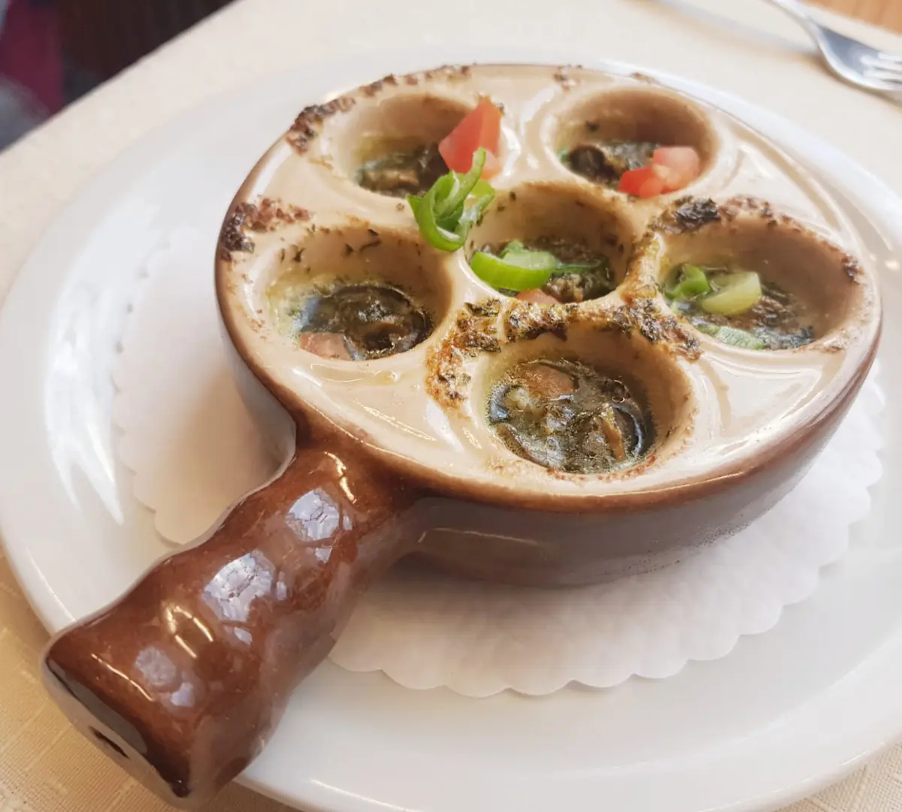
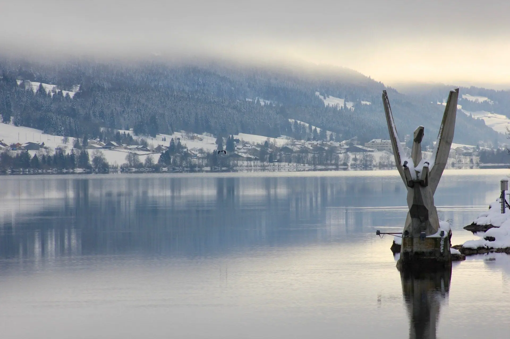
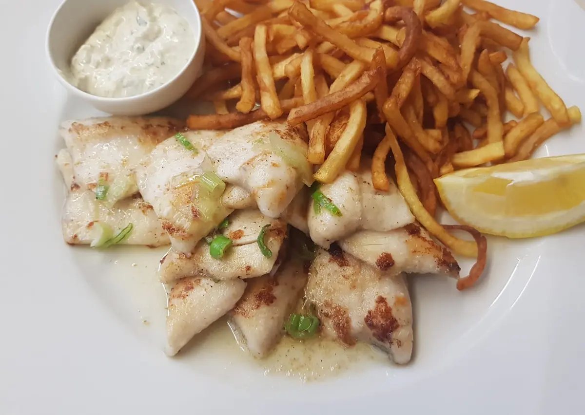
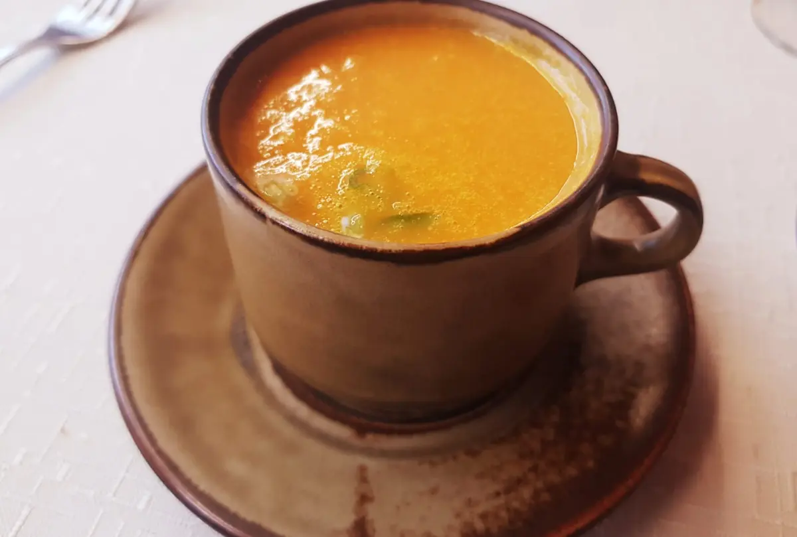
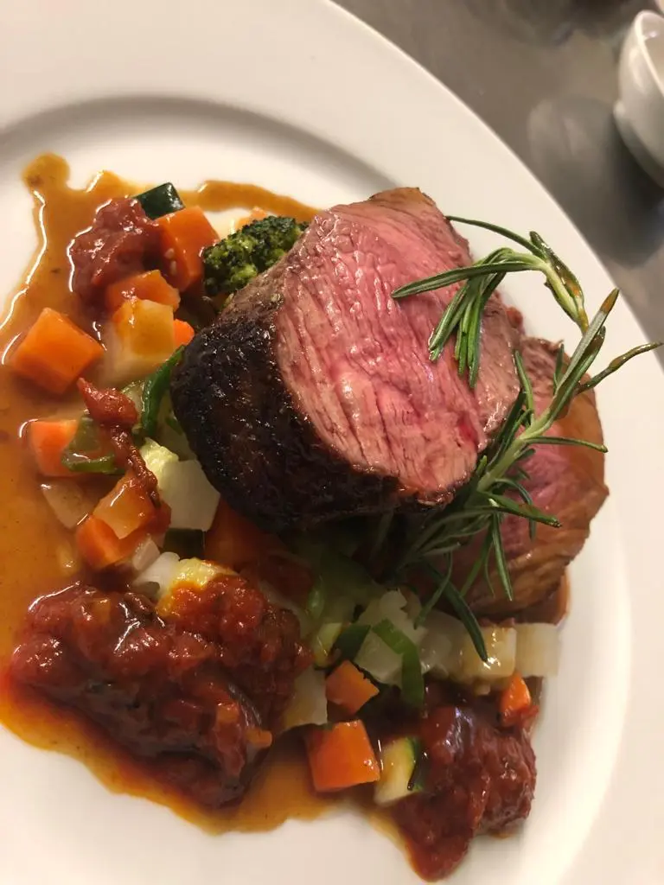
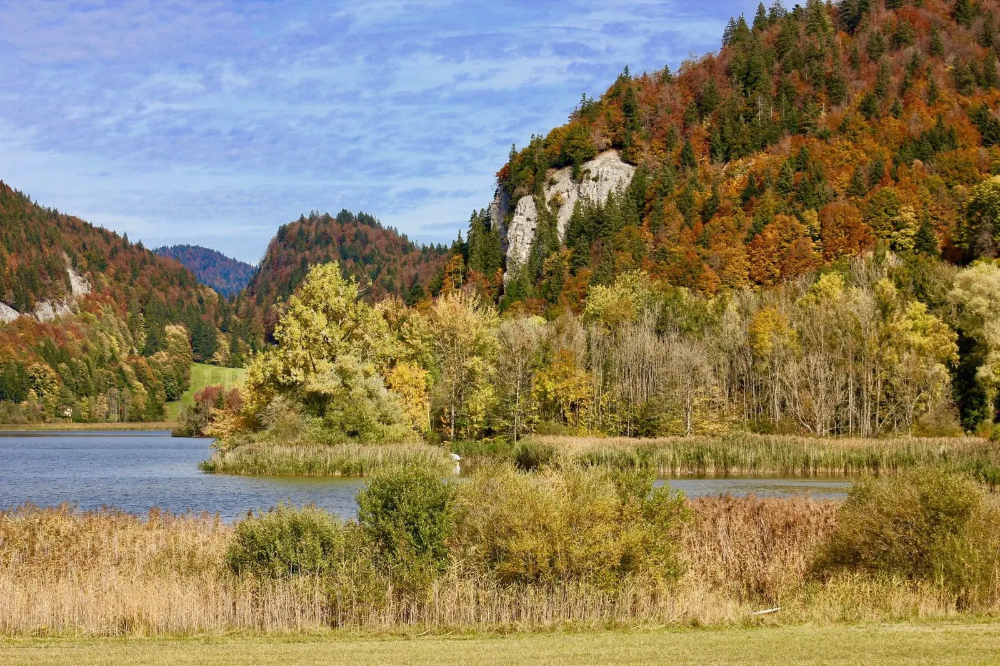
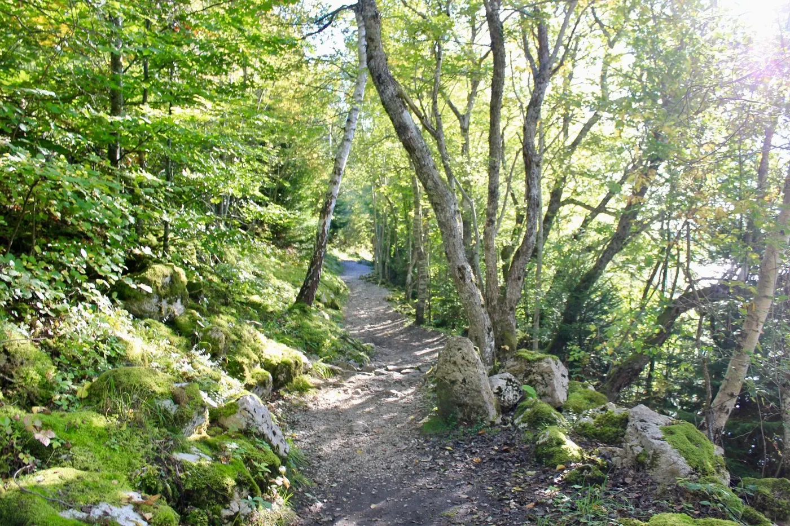

Les Charbonnières · Vallée de Joux
Le Cygne
Une cuisine régionale, variée et créative, avec des produits de saison et du marché.


Loin de l'agitation citadine
Face à la Dent de Vaulion et au lac Brenet
Aux Charbonnières, le berceau du fameux Vacherin Mont d'Or, un hôtel voué à la nature et à la tranquillité, au cœur de la Vallée de Joux.
Le restaurant
Un regain de nouveauté
Marc aime revisiter d'anciens plats et leur donner « sa » touche personnelle. Chaque jour est propice aux propositions du marché ou des fournisseurs de la région.
Places au restaurant
Avec des propositions qui changent selon le marché et les fournisseurs de la région.
Places en salle à manger
Repas d'entreprise, d'anniversaire ou de mariage : chaque événement est étudié avec vous.
Places en terrasse
Au plaisir de vous y accueillir, face au calme de la Vallée.
Cet automne
La carte de chasse
La chasse
- Civet de sanglier façon grand-mère
- Noisettes de chevreuil
- Entrecôte de cerfSauce chasse
- Selle de chevreuil désossée
Accompagnée de chou rouge braisé, choux de Bruxelles, poire et marrons. Au choix : frites maison, spätzli à la betterave maison ou nouilles.
Pour commencer
- Terrine de chasse maisonChutney de courge
- Velouté aux cèpes
Et aussi
- Filets de perches meunièreFrites, sauce tartare
- Tartelette à la courgePlat végétarien · chou rouge braisé, spätzli à la betterave



Lea Blunschi & Marc Rochat
Une même passion pour l'accueil
Marc a passé toute sa jeunesse aux Charbonnières. Après un apprentissage de cuisinier au Café du Lac au Pont, il a parfait sa formation dans plusieurs grands restaurants de Suisse alémanique.
C'est là qu'il a rencontré Lea, cuisinière puis pâtissière de formation, passée par deux ans de gestion à l'école hôtelière de Zurich. Désormais, ils réalisent leur rêve, ici.
À écouter : Lea et Marc dans le podcast « Bille en tête » sur RTS.


Ils sont venus
« La cuisson du canard était parfaite tout comme son jus et j'ai même apprécié les épinards frais. L'accueil était adorable. »
« Une nourriture sensationnelle, régionale et fraîchement préparée. Nous reviendrons certainement bientôt. »
« Un grand chef cuisinier, service impeccable, avec le sourire de la patronne. »
Venir au Cygne
Réservez votre table
- Adresse
- Rue du Mont d'Or 7
1343 Les Charbonnières · Vallée de Joux - Téléphone et e-mail
- 021 841 12 81
info@du-cygne.ch
Horaires d'hiver · dès fin octobre
| Lundi et mardi | Fermé |
| Mercredi à vendredi | 8h30 – 14h00 · 16h30 – 22h30 |
| Samedi | 8h30 – 14h30 · 17h00 – 23h00 |
| Dimanche | 9h00 – 15h30 |
L'Hôtel du Cygne
Pour s'éloigner du stress, organiser un séminaire pour votre société ou un atelier pour votre club, au milieu d'une nature unique.